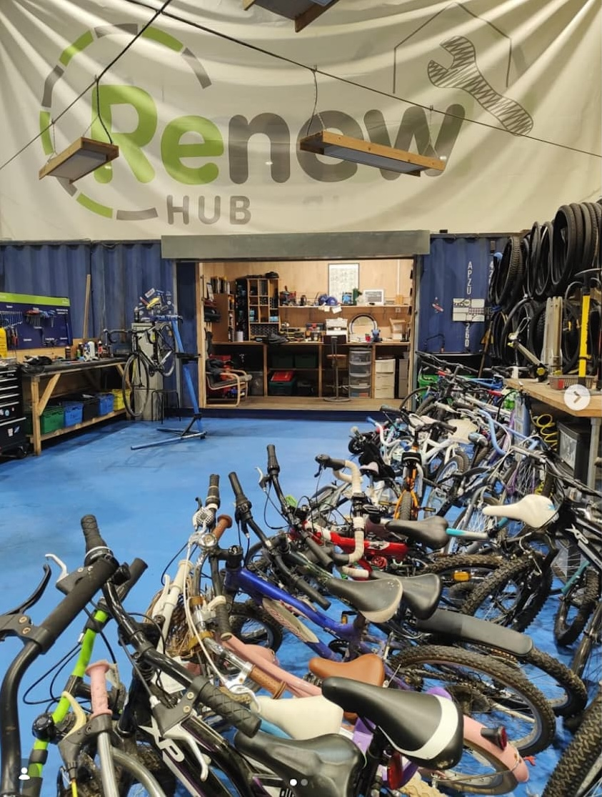
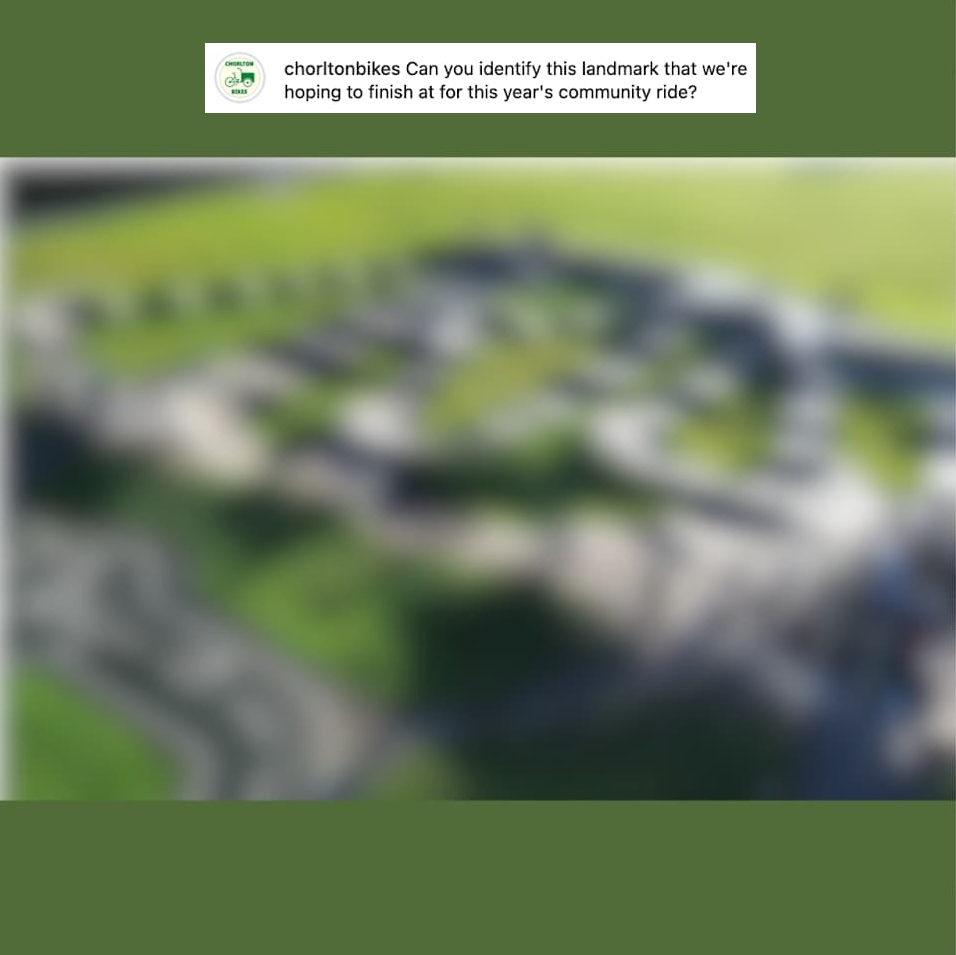
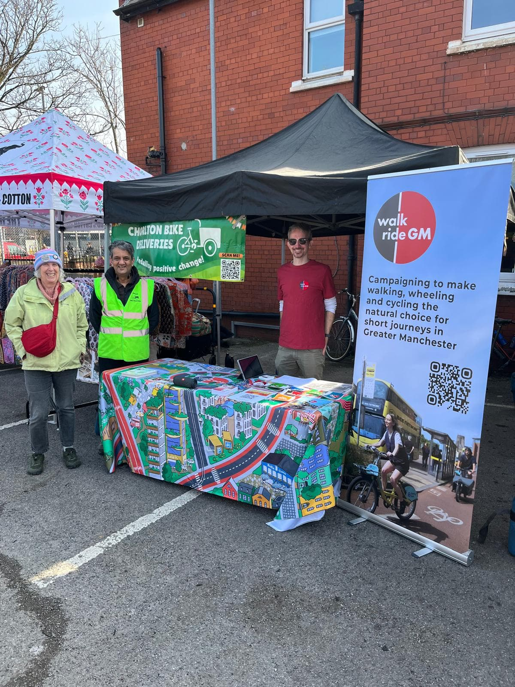
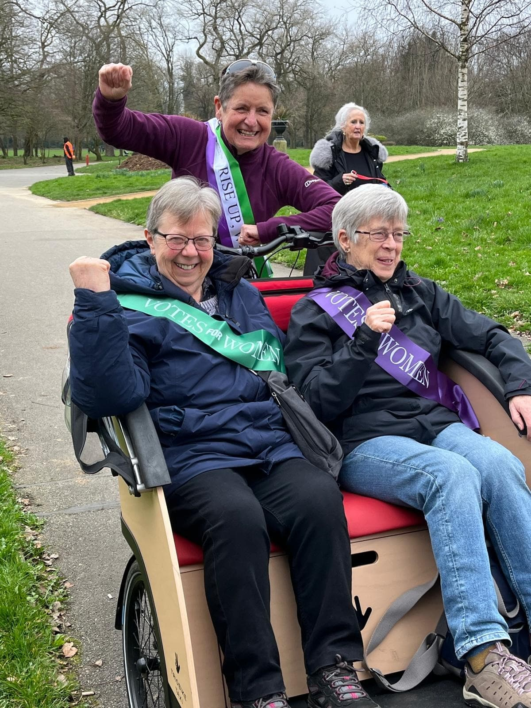
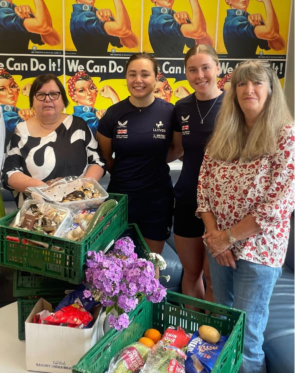
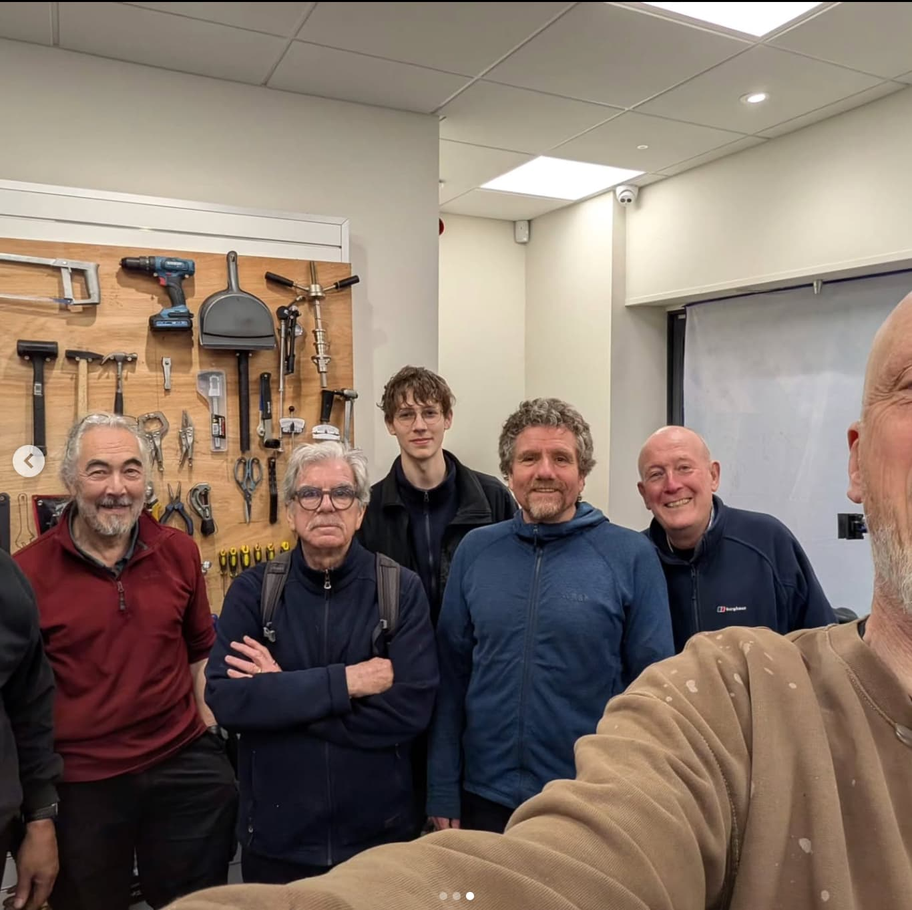
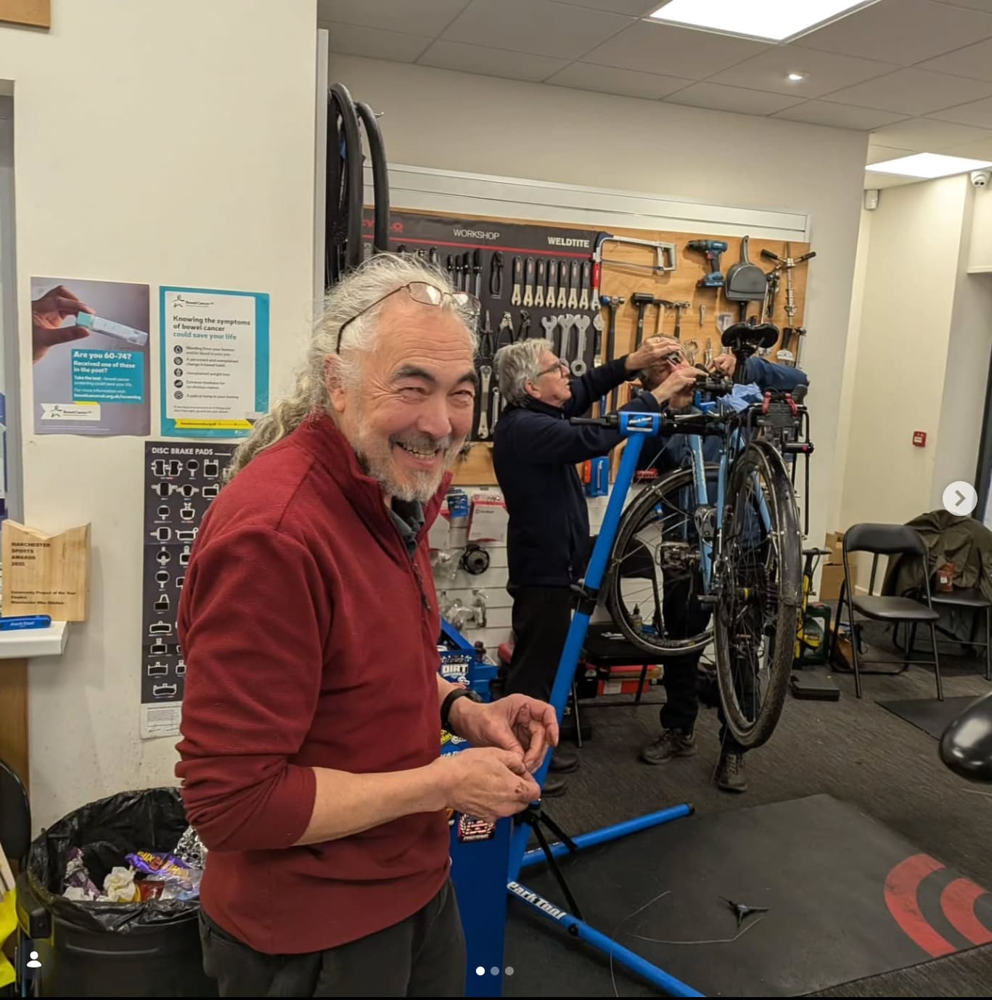
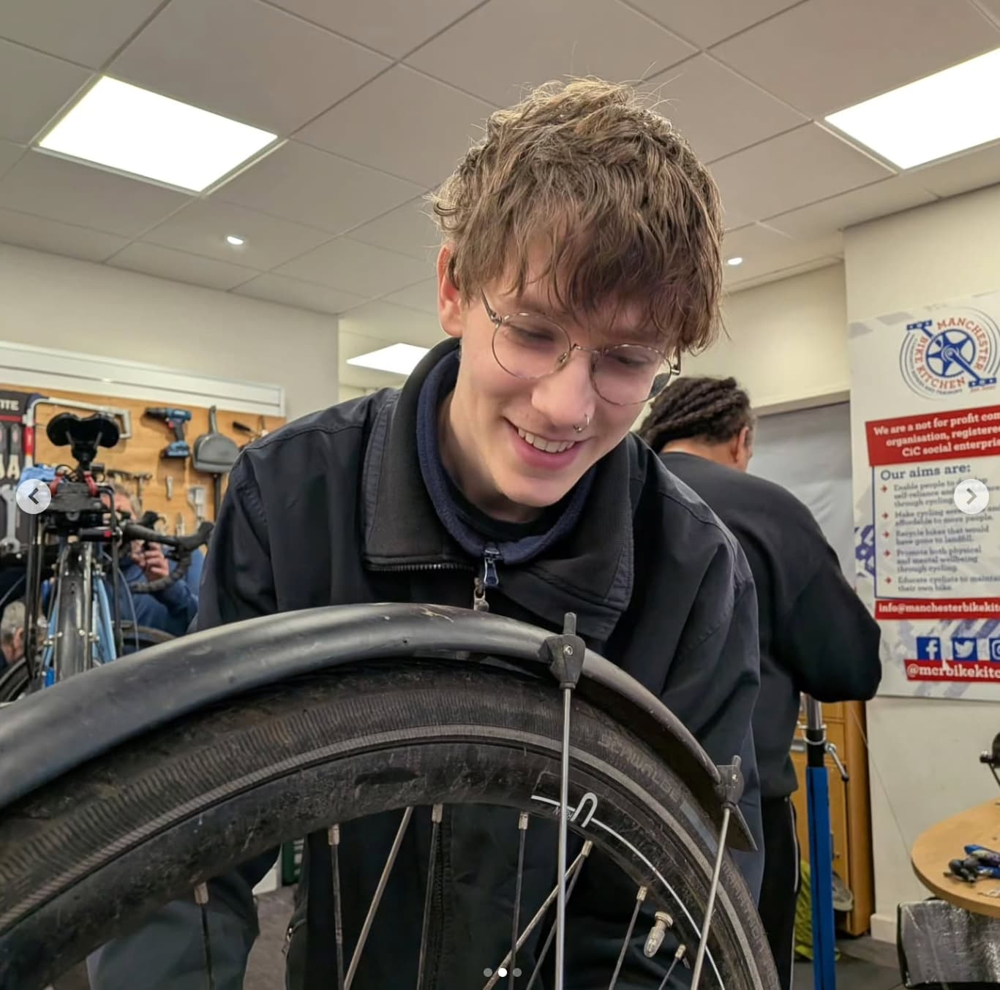
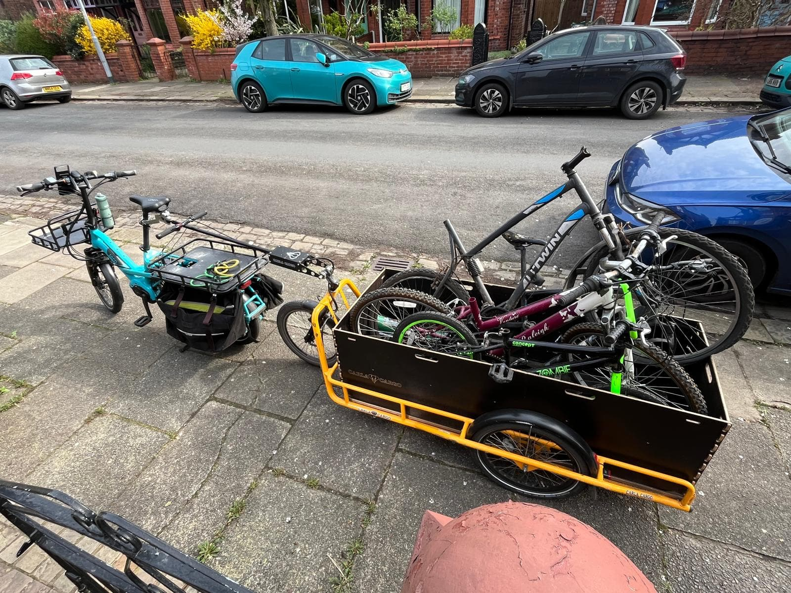

Hello Friends and Members of Chorlton Bikes,
We're really glad you're here. This newsletter is a chance to share what we've been up to - our riders, our partners, and the difference we're making together in Chorlton and beyond.
This month's edition is arriving a little later than usual - but with the sunshine finally making an appearance, it feels like a good moment to reflect on a positive and productive March.
March
2026
As the weather improved and the days became brighter, our riders and volunteers enjoyed being back out on the roads, with plenty happening across the Chorlton Bikes community.









Thank you to everyone for the energy, care and commitment that keeps Chorlton Bikes moving forward. March has been another positive month - and there's plenty more to come. 🚴♀️💚